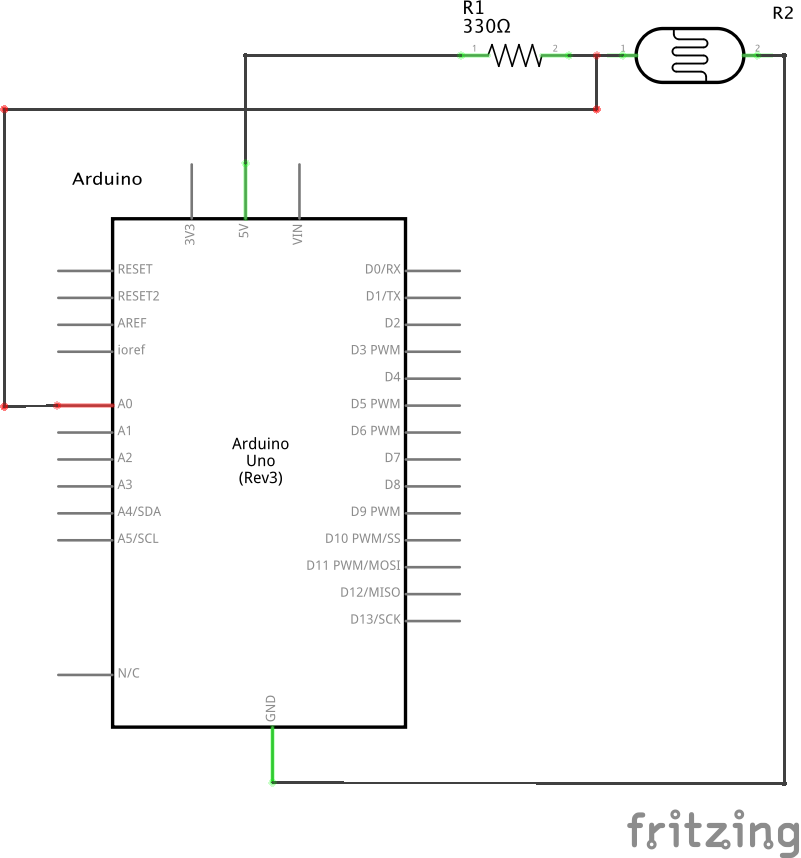
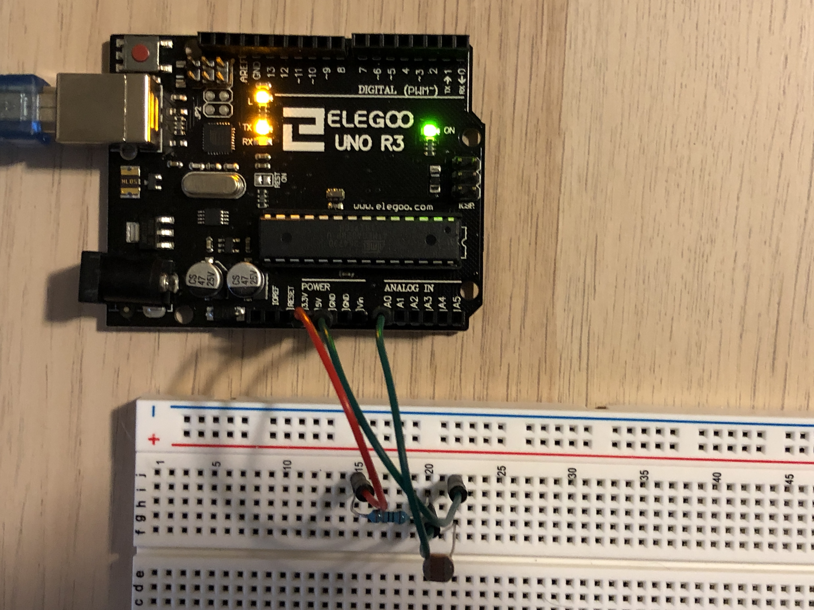

Arsh's Assignment 6!
Circuit in operation

When the photoresistor detects light, the graph dips in value, and it remains high when the photoresistor detects darkness.
Calculations
V = I*R
5 = 0.02*R
R = 250 Ω
This calculation shows the minimum resistance required for the photoresistor. I used 330 Ω resistors to be safe.
Schematic

Circuit

Code Snippet
const int analogInPin = A0; // analog input pin that photoresistor is connected to
int sensorValue = 0; // value read from photoresistor
// setting up pin & serial monitor
void setup() {
Serial.begin(9600); // begin serial communications at 9600 bps
pinMode(analogInPin, INPUT); // set analog in pin A0 as an input
}
// this function will loop forever
void loop() {
sensorValue = analogRead(analogInPin); // read value from analog in pin
Serial.println(sensorValue); // print sensor value to the serial monitor
}